Nornickel Mining Platform
A next-generation CAD & GIS dispatching system for high-stakes underground mining operations.
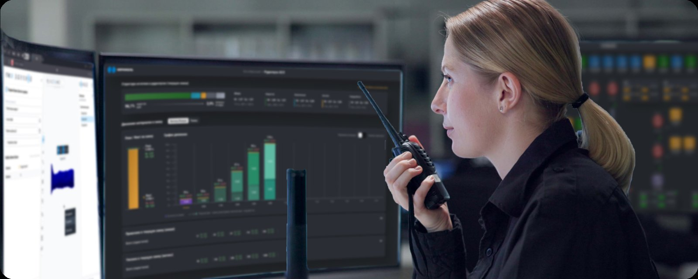
Design Team Structure
Custom views for distinct roles
- Enterprise Manager
- Geologist
- Short-term Planner
- Spatio-Geological Modeler
- Mine Surveyor
- Dispatcher
- Worker/Operator
Modernizing heavy industrial software with safety-first design
Underground mining operations are high-stakes environments where poor legibility translates directly to operator error or compromised safety protocols. The objective was to design a comprehensive geological, surveying, and dispatching ecosystem for Nornickel's massive mining properties.
We delivered an optimized design system tailored for highly complex CAD blueprints, real-time spatial analytics, and high-contrast dark environments on rugged outdoor tablets and desktop monitors.
What for?
Development of long-term and short-term mining production plans at mining sites.
Monitoring of the mining process at mine sites.
Execution of tasks on mining and industrial equipment.
Soil analysis for the content of mineral resources.
Legacy Bottlenecks
- Overwhelming interface layouts causing dispatcher cognitive fatigue.
- Poor legibility in dark underground tunnels on portable rugged tablets.
- Inconsistent component scales across desktop CAD monitors and hand-held units.
- A lot of different parts of the process with diverse devices included, which require unique design system and consistency.
Key Features & Modules
Real-time Dispatching Control
Empowering dispatchers to manage and coordinate equipment, personnel, and ore material movement in real-time. The interface processes dozens of streaming feeds, status triggers, and critical alarms without overwhelming the desk layout.
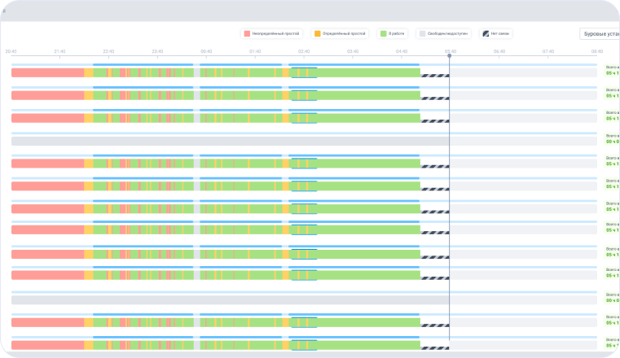
Conveyor & Ore Flow System
A material flow control tracker recording physical volumes traveling on underground hoists. Visualized schemes indicate storage location statuses, active load areas, and the delta between planned target capacity and actual tonnage transported.
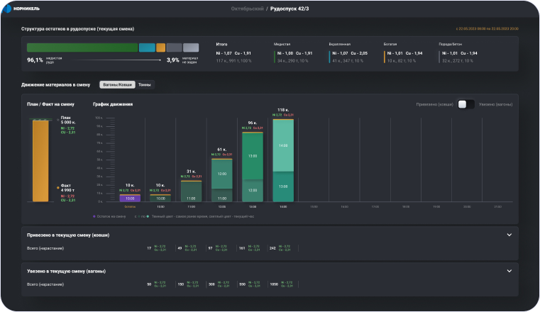
Interactive Gantt Scheduling
We completely restructured legacy timelines. Traditional industrial planning diagrams are too dense and uniform. We engineered an interactive, high-contrast timeline enabling rapid card drag-and-drop, length trimming, and clean color-coded shifts.
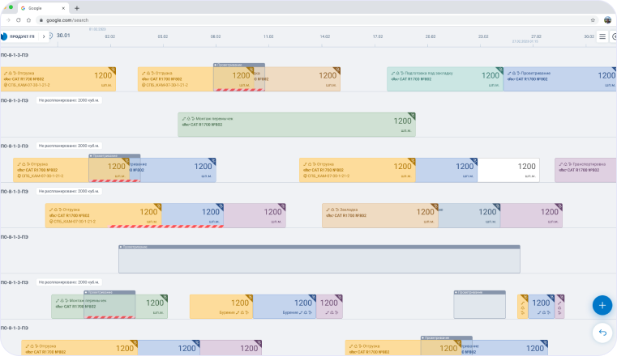
CAD-Grade GGIS Mapping
A specialized geospatial CAD interface displaying geological surveying, tunnels, environmental data, and mining infrastructure. Users can toggle layers, slice tunnel cross-sections, and run precise spatial calculations in heavy 2D or 3D environments.
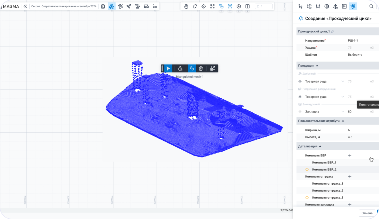
Curated Industrial UI Kit
Heavy industries require extreme consistency. We designed multiple UI frameworks optimized for rapid scanning, specific color statuses, and high-contrast form controls.
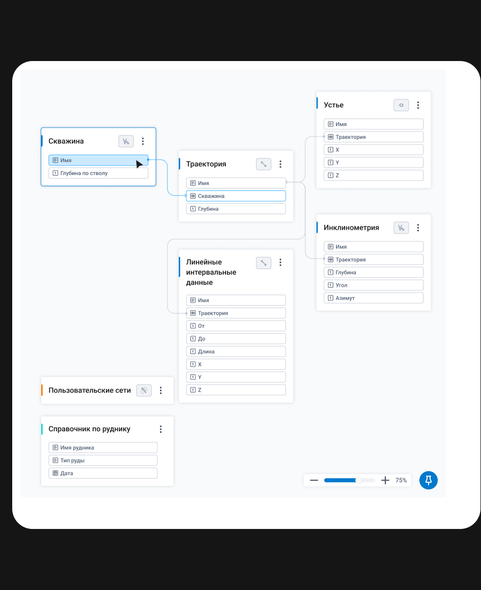
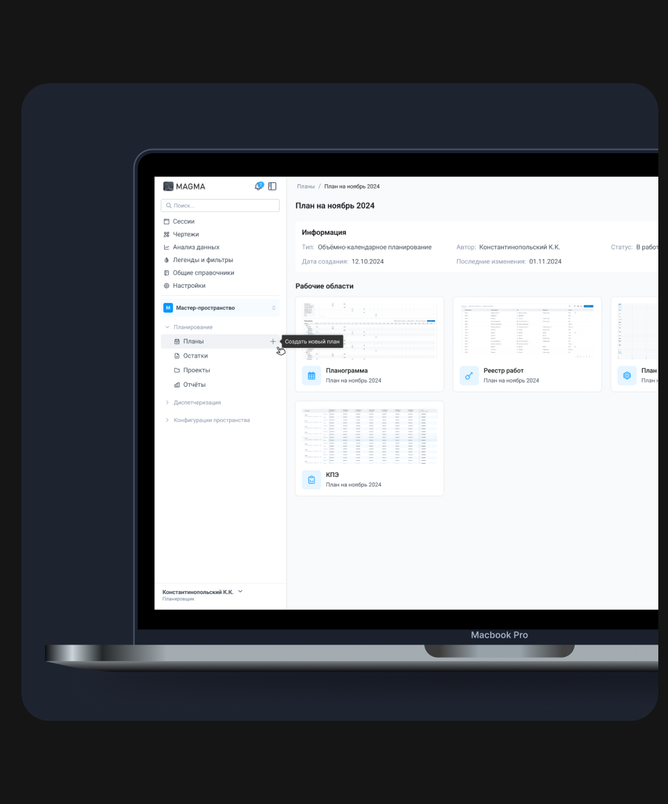
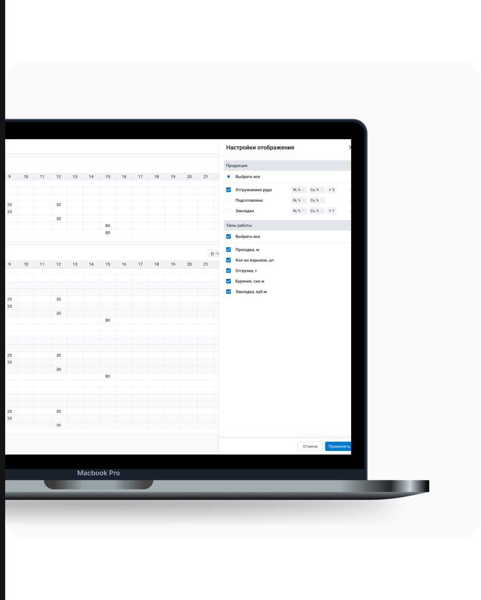
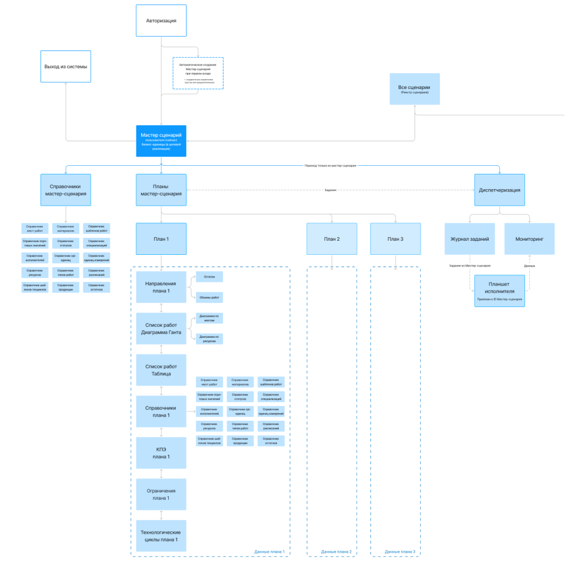
Peripheral devices
Designed a rugged tablet interface for peripheral device control on drilling machines, enabling operators to monitor drilling parameters, manage equipment status, and execute commands directly at the mining site.
Real-time data visualization of drilling depth, pressure, rotation speed, and bit condition — with interactive controls for peripheral equipment calibration and emergency shutdown protocols.
Check presentation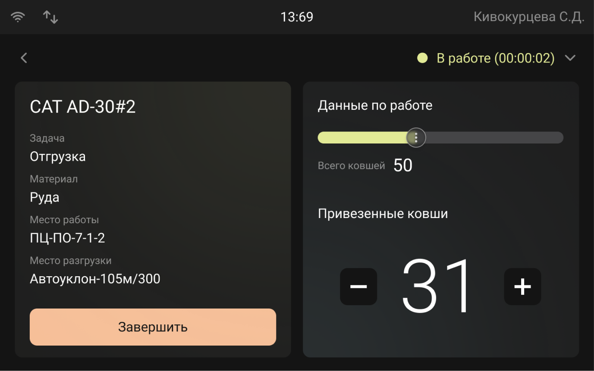
20+ screens for the operator app
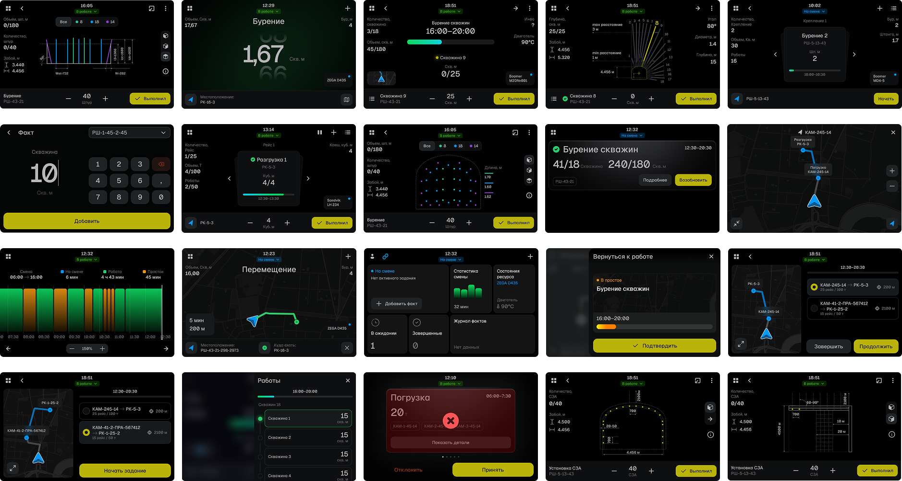
Want to learn more about this project or discuss a collaboration?
Get in touchLet's stay in touch!
I'm always open to new projects, long-term collaborations, and exciting ideas. Feel free to reach out through any channel.